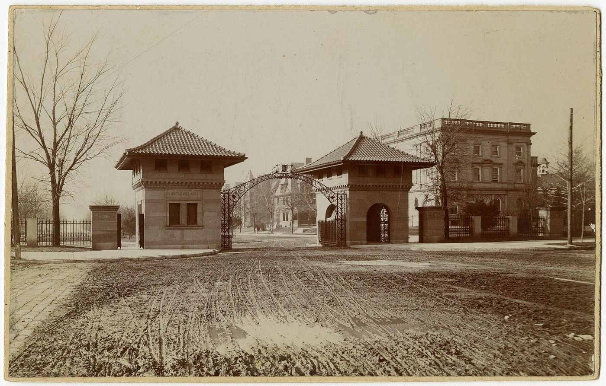
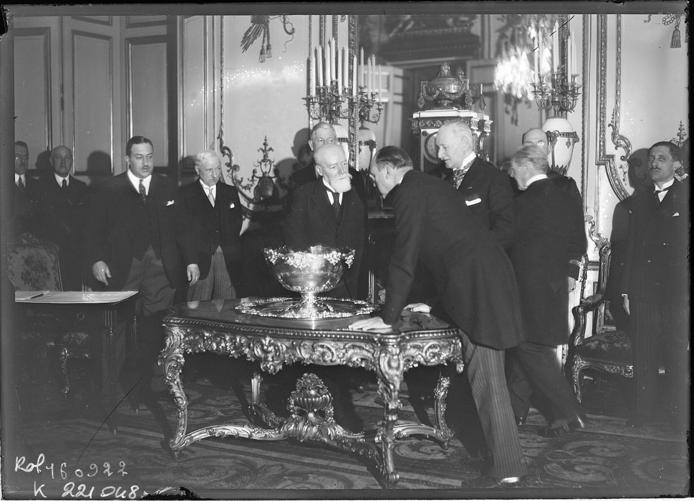
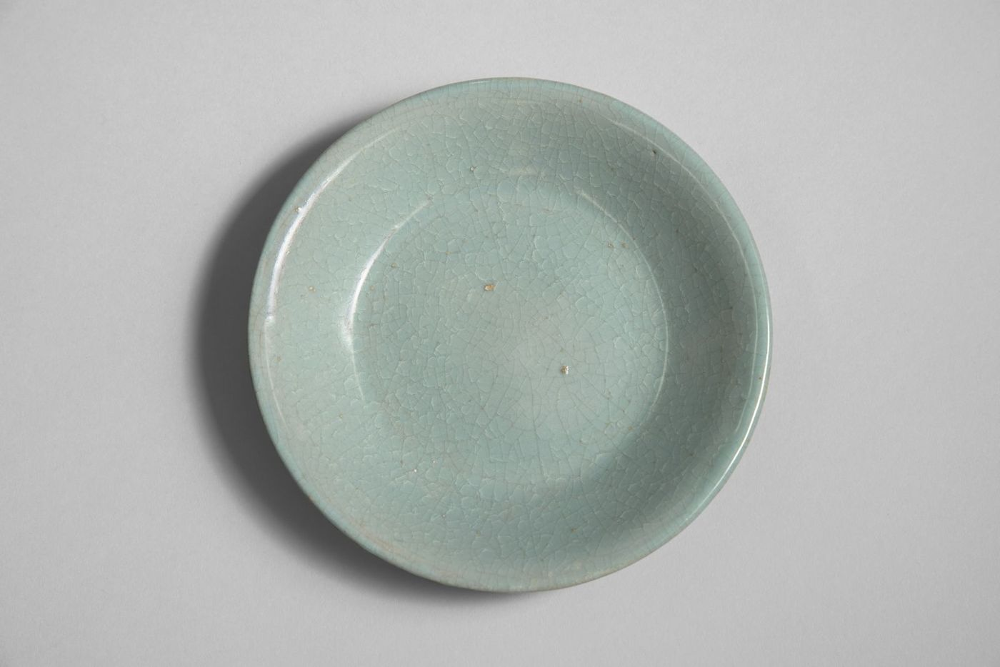
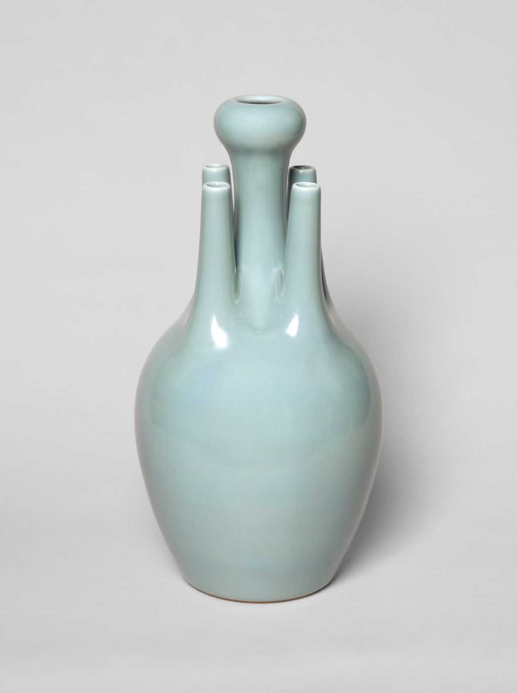
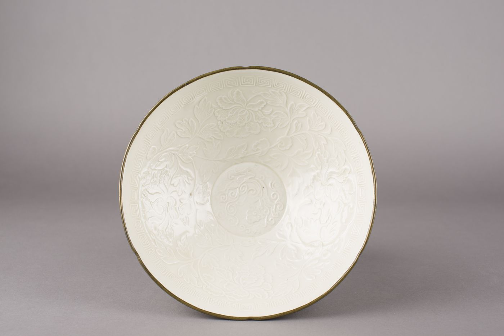
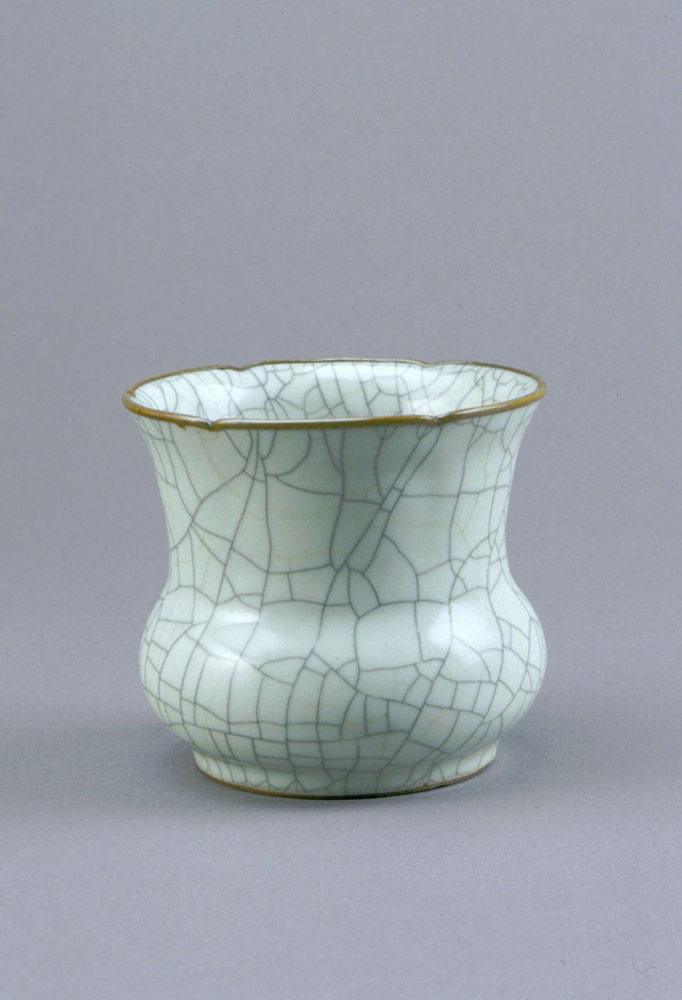

A house with a story.
25 Foreway is a house in Ladue, Missouri, and the home of John W. Davis’s books: a history of a St. Louis family that gave the world the Davis Cup, and two series of novels about the men who kept an army moving in 1944 and 1945.

A house, a family, a shelf of books
The Davises came to St. Louis as dry-goods merchants and went on to shape its parks, its tennis and its art museum. This site gathers that public history alongside the house at 25 Foreway and the people telling the story now.
- 01The House25 Foreway, Ladue. Its setting, the ground around it, and how to inquire.Explore
- 02Family HistoryMarket Street to Westmoreland Place, Dwight F. Davis and the Cup, Samuel C. Davis and his collection, the court on Barnes Road.Read
- 03The BooksThe House of Davis, Colonel Baldwin! Books I–IV, Red Ball I–III and the children’s books, each with an excerpt.Browse
- 04PeopleJohn W. Davis, Ian Davis, Joe Dilschneider and Andrew O. Davis, and what each of them does.Meet
- 05InquireQuestions about the house, the books, press or family history.Write

A silver bowl from St. Louis
In August 1900, at Longwood near Boston, a Harvard graduate from St. Louis named Dwight F. Davis played in the first match for the international trophy he had paid for: a 217-ounce silver punch bowl. He won his singles, and with Holcombe Ward he won the doubles.
More than a century later the competition still carries his name. In St. Louis he is remembered as the park commissioner who built public tennis courts in Forest Park and took down the “Keep Off the Grass” signs.
The Davis Cup storyWritten from the documents
Every book ends with a note that keeps the record, the family memory and the invention apart.


What Samuel C. Davis left the city
In 1940 Samuel C. Davis bequeathed his Chinese ceramics to the City Art Museum, now the Saint Louis Art Museum. Pieces from the bequest are on view there today.




Who’s telling the story now
Four people, each in his own line of work.
Writes the books on this site; co-founder of ClickSmith.
IIan DavisYellow Dog FlyfishingCo-owner of Yellow Dog Flyfishing Adventures; author of A Passion for Bonefish.
JCapt. Joe DilschneiderTrout Stalkers · Madison River Fishing Co.St. Louis native and Madison River outfitter in Ennis, Montana.
AAndrew O. DavisOverall Capital PartnersCo-founder of a Boston private equity firm; conservation and public-policy boards.
About the house, the books or the history
The price of 25 Foreway is available on inquiry. Readers, researchers and press are welcome to write too.
Make an inquiry